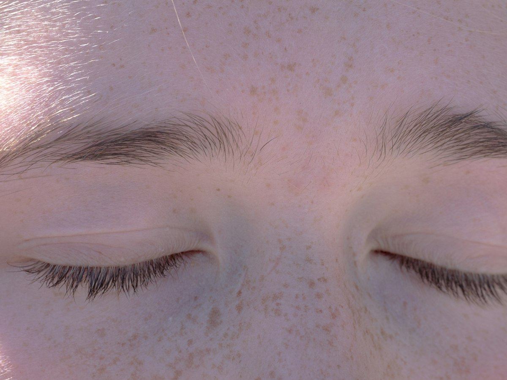
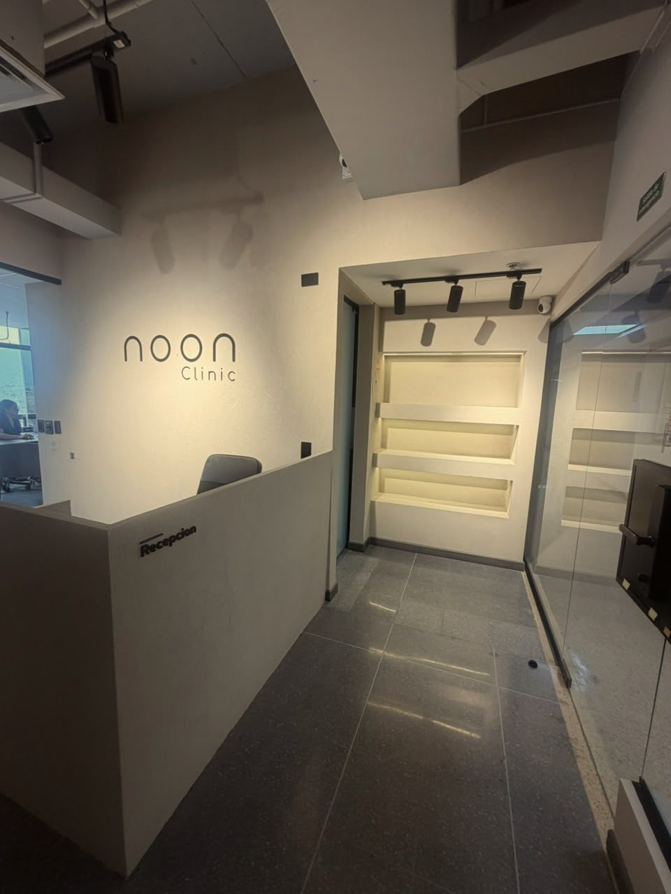

Guides
Before you decide.
Guides from the noon Clinic team on each procedure, recovery, safety and planning your trip to Medellín from the United States.

Eyelid Surgery in Medellin, Colombia, on a Short TripOf every surgery on this list, this one comes closest to an actual short trip. It's still surgery on your face, and that part isn't short.Read BBL in Medellín, Colombia: What Actually Drives the RiskThe scary BBL stories you've seen online are real. They're just not about the country. They're about what gets combined in one surgery.Read Rhinoplasty in Medellin, Colombia, for US PatientsIt's the one surgery on this list you can't cover with clothing. That changes how you should plan the weeks after it, not just the trip itself.Read Mommy Makeover in Colombia, for US PatientsCombining breasts and abdomen into one surgery isn't a scheduling choice. It's your surgeon's call, and it changes how long you need away from home.Read Breast Augmentation in Medellin, for US PatientsThe surgery itself is short. The real question is whether you need volume, a lift, or both, and your trip needs to fit whichever one it is.Read
Breast Augmentation in Medellin, for US PatientsThe surgery itself is short. The real question is whether you need volume, a lift, or both, and your trip needs to fit whichever one it is.Read Plastic surgery in Colombia as a US residentSafety, entry rules, timing and the trip home, before you book anything.Read
Tummy Tuck in Colombia, for US PatientsThis isn't a weekend fix. It's planning 2 to 3 weeks of recovery away from home, and getting the timing right.Read
Liposuction in Medellín, Colombia, for US PatientsOne trip, one real decision: what can safely go together in the same surgery, and why that call belongs to your surgeon, not your calendar.Read
Red flags in medical tourism for plastic surgeryThe real warning signs aren't about the country you're weighing. They're about what a clinic tells you before surgery.Read
How to choose a surgeon in Medellin, not just a clinicA clinic's name on Instagram tells you nothing about who's actually holding the scalpel.Read
Plastic surgery in Colombia as a US residentSafety, entry rules, timing and the trip home, before you book anything.Read
Tummy Tuck in Colombia, for US PatientsThis isn't a weekend fix. It's planning 2 to 3 weeks of recovery away from home, and getting the timing right.Read
Liposuction in Medellín, Colombia, for US PatientsOne trip, one real decision: what can safely go together in the same surgery, and why that call belongs to your surgeon, not your calendar.Read
Red flags in medical tourism for plastic surgeryThe real warning signs aren't about the country you're weighing. They're about what a clinic tells you before surgery.Read
How to choose a surgeon in Medellin, not just a clinicA clinic's name on Instagram tells you nothing about who's actually holding the scalpel.Read
Is it safe to get plastic surgery in Colombia?Short answer: it can be, and what decides that is the clinic, not the country.Read Traveling with a companion for surgery in ColombiaThis isn't about having company on the flight. It's about having someone ready to help when you can't.Read Follow-up care after surgery in Colombia, once you're back homeThe surgery happened in Medellin. The follow-up doesn't stay there.Read Where should you stay to recover in Medellin?This isn't booking a vacation rental. It's choosing where you'll actually heal.Read What to Pack for Surgery in Colombia?The suitcase you'd pack for a vacation isn't the one you need for this trip.Read When Can You Fly After Liposuction?Your flight home gets cleared by how you're healing, not by the days your calendar has free.Read How Long Should You Stay in Colombia After Plastic Surgery?Before you book a return flight, here's how these days actually break down.ReadBy city
Flying in from your city.
noon Clinic
Let's plan your trip
Message us from the US and we'll set your consultation, procedure and follow-up dates with you.